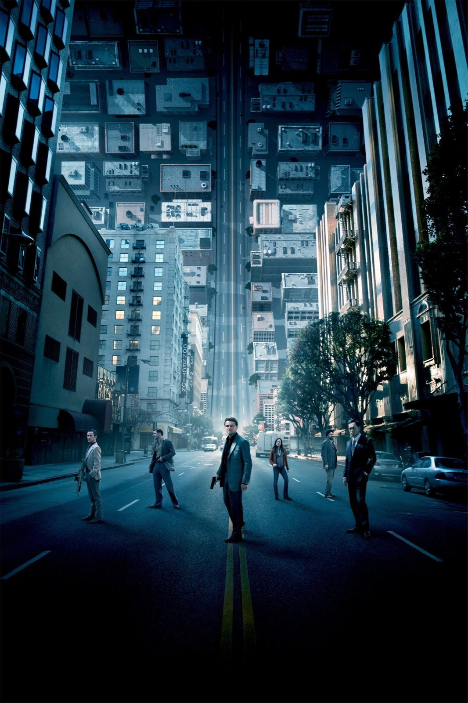
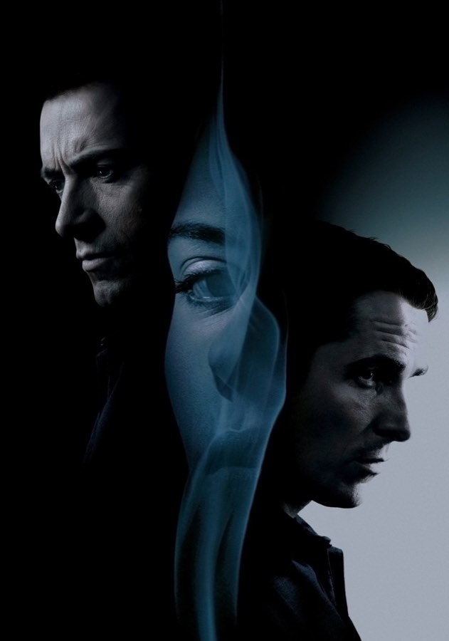
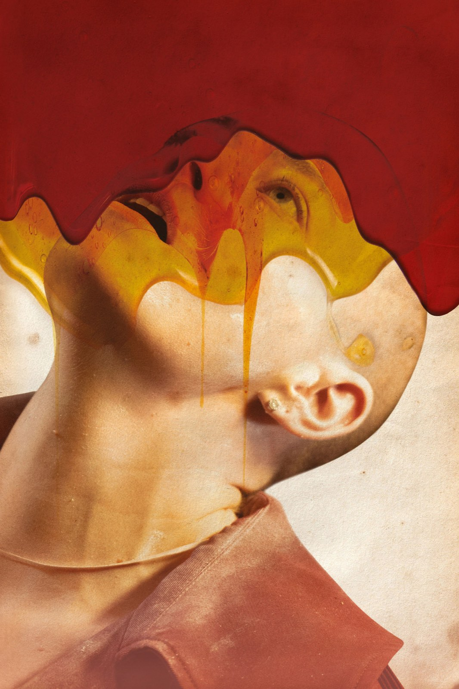

Su Sky e NOW
Cosa vedere su Sky e NOW: recensioni, curiosità e approfondimenti della redazione su film e serie in abbonamento, con la disponibilità aggiornata.
Film e serie su Sky e NOW

Inception, il finale spiegato (spoiler)
Sedici anni dopo, l'ultima inquadratura di Nolan divide ancora: cosa dicono davvero il regista, la produttrice e Michael Caine

The Prestige compie 20 anni: 6 curiosità
David Bowie convinto di persona, cinque anni di sceneggiatura, una Londra vittoriana ricostruita a Los Angeles e due Oscar persi contro lo stesso film: il trucco meglio riuscito di Christopher Nolan, visto da dietro le quinte
House of the Dragon – Stagione 3
La Danza dei Draghi entra nel vivo: battaglie epiche e finale potente, ma una parte centrale che prende troppo tempo per decollare

Euphoria – Stagione 3
Cinque anni dopo il liceo, Rue e gli altri fanno i conti con l'età adulta: Zendaya è immensa, le immagini restano potenti, ma la scrittura di Sam Levinson divide come mai prima

Bugonia
Due complottisti rapiscono una manager convinti che sia un'aliena: Lanthimos rifà un cult coreano e firma una satira nera, crudele e spassosa sul nostro presente
Mickey 17
Un operaio che muore e rinasce a ogni missione, un leader grottesco e un pianeta di ghiaccio: la fantascienza satirica di Bong Joon-ho diverte più di quanto graffi
Le piattaforme cambiano spesso: in ogni articolo trovi la data dell'ultimo aggiornamento. Altre piattaforme: Netflix · Disney+ · Apple TV · HBO Max